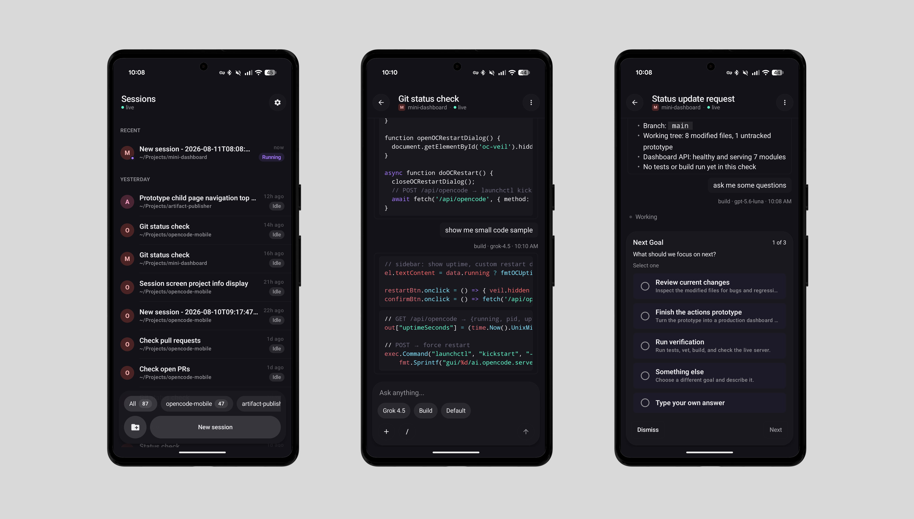

Android · install
Install via Play Internal Testing
Get OpenCode Mobile — Unofficial through Google Play Internal testing. This is a private tester channel — not the public Play Store listing.
Access is invite-only. Your Google account must be on the internal testing list before the opt-in link works. Need an invite? Request access. After install, follow the connection guide.

0
Before you start
What you need on the device
- A physical Android device (or emulator) signed into the Google account that was invited
- The Google Play Store app
- Your email already added to Play Internal testing
Coming from an older sideloaded / Firebase APK? Uninstall that copy first. Different signing certificates won’t update in place.
1
Join Internal testing and install
On your physical device
Steps
- On the device, open the Play Internal testing opt-in link while signed into your invited Google account.
- Accept the tester invite if prompted.
- Open the app listing for OpenCode Mobile — Unofficial.
- Tap Install (or Update).
- Launch the app from Play or the app drawer.
2
After install
Point the app at your opencode server
- Open the app and complete or skip onboarding if shown.
- Follow Connect to an opencode server (Tailscale recommended).
✓
Checklist
Quick confirmation
- Google account invited to Internal testing
- Opted in via the testing link
- Old sideloaded copy uninstalled if switching
- App installs and opens from Play
- Server connection saved
Troubleshooting
| Symptom | Likely cause |
|---|---|
| Opt-in page says you’re not a tester | Email not on the Internal testing list; wrong Google account signed in on the device |
| App listing missing or Install unavailable | Not opted in yet; Play still syncing after invite; wrong account in Play Store |
| Install fails / “App not installed” | Existing sideloaded build still installed — uninstall it, then install from Play |
| Only an old build shows | Newer internal release not rolled out yet; wait or check with the maintainer |